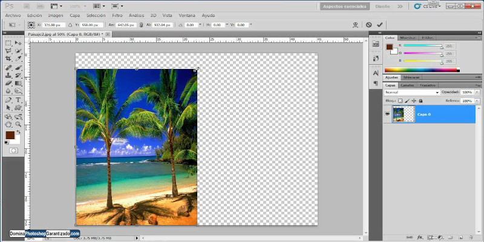

Los gráficos son uno de los elementos más utilizados en los sitios web, ya que, además de ser efectivos en la interfaz de navegación, brindan color y vistosidad, mejorando el diseño gráfico, ampliando la información, etc.
Selección de Imágenes
Para su uso en la página web, es necesario adquirirlas con anticipación, ya que sus características deben ser distintas a las necesarias para su impresión. El estudio de imágenes para su adecuada visualización en pantallas pretende generar archivos ligeros, lo cual disminuye el tiempo de carga del sitio web. En este caso, serán las pantallas las responsables de brindar la calidad en la visualización de las imágenes.
Software de Edición
En el trabajo con imágenes, podemos encontrarnos con programas profesionales gratuitos y de pago. En estos últimos casos, los más utilizados son Adobe Photoshop "para editar fotografías y crear composiciones, pinturas digitales, animaciones, diseños gráficos y mucho más".
Dentro de los programas gratuitos y con las herramientas necesarias para un tratamiento profesional de las imágenes para la página web, contamos con Gimp, Pinta y Paint.net, entre otros.
Formatos de Imagen
Los formatos de imagen más utilizados en sitios web y que permiten una visualización óptima en pantalla son PNG, JPEG, GIF y SVG.
- JPEG (Joint Photographic Experts Group): Es el formato más utilizado en todo el sistema operativo. A pesar de que pierde calidad en su compresión, se puede elegir el nivel de esta al generarlo, de modo que cuanto más ligero, más calidad adicional se perderá.
- PNG (Graphics Portable Network Graphics): Se caracteriza porque el tamaño final de compresión es reducido, permite una mayor profundidad de contraste y es compatible con transparencias.
- GIF (Graphics Interchange Format): Dispone de una compresión limitada a 256 colores, proporcionando imágenes de tamaño reducido pero con la calidad suficiente para su visualización en pantalla. Asimismo, acepta transparencias.
- SVG (Scalable Vector Graphics): Permite la opción de elementos geométricos vectoriales y animaciones de gráficos vectoriales sencillas, con capacidad de administrar sus datos para modificarlas.
Optimización de Imágenes
La optimización de imágenes es el proceso de tratamiento que se le aplica a una imagen para aligerar su tamaño y mantener la calidad suficiente para su correcta visualización en pantalla y con rápida velocidad de carga en web. La optimización dependerá de la finalidad y el tamaño en el que se vaya a utilizar la imagen, buscando un archivo lo menos pesado posible. También se debe tener en cuenta el formato final de dicho archivo ya que tienen características diferentes.
Redimensionamiento de Imágenes
Al reducir el tamaño de una imagen apenas se aprecia la pérdida de calidad, pero al aumentarlo, se necesita información de la que no se dispone, por lo que el programa que se utilice para este proceso tendrá que rellenar el espacio con píxeles repetidos o generados automáticamente según los colores adyacentes, sufriendo una considerable pérdida de calidad. En la mayoría de programas este procedimiento es el mismo.
Implementación de Código
Con el uso de imágenes en un sitio web se pueden conseguir efectos visuales llamativos aplicando eventos o acciones combinando varios lenguajes de programación, como son HTML, CSS o JavaScript.
Reemplazo de Imágenes
Reemplazar una imagen del sitio web cuando el usuario realiza una acción determinada aporta dinamismo y funcionalidad a la página. Para realizar este efecto de sustitución de imágenes contamos con diferentes técnicas según el lenguaje de programación.
Ejemplo de Código HTML
Utilizando únicamente HTML habrá que implementar el siguiente código:
<img src="imagenes/play.png" onmouseover="this.src='imagenes/play_over.png'" onmouseout="this.src='play.png'" />
Así, la imagen con nombre “play.png” y guardada en la carpeta
“imagenes” se sustituirá por la imagen “play_over.png”, de la
misma carpeta, cuando el ratón pase por encima. El atributo
onmouseover hace que la primera imagen vuelva a
aparecer al apartar el cursor de la imagen.
Ejemplo de Código CSS y JavaScript
Para conseguir el mismo efecto utilizando también CSS y JavaScript, se debe utilizar el siguiente código:
HTML:
<div class="boton_play"></div>
CSS:
#boton_play {
background: url('../imagenes/play.png') no-repeat;
width: 3em;
height: 3em;
cursor: default;
}
#boton_play:hover {
background: url('../imagenes/play_hover.png') no-repeat;
cursor: pointer;
}
JavaScript:
document.getElementById('boton_play').addEventListener('mouseover', function() {
this.style.background = "url('imagenes/play_hover.png')";
});
document.getElementById('boton_play').addEventListener('mouseout', function() {
this.style.background = "url('imagenes/play.png')";
});